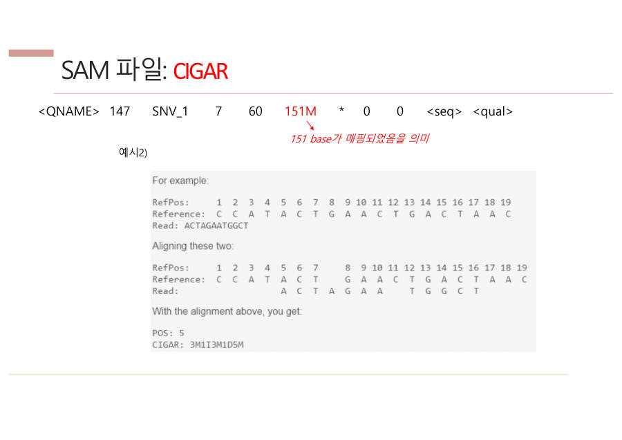

CIGAR — 어떻게 붙었는지 한 줄로 쓰기 (매 시간 반복)
조각이 레퍼런스에 어떻게 붙었는지를 숫자 + 글자로 이어서 쓴 것이에요. 읽을 때는 길 안내처럼 앞에서부터 하나씩 읽어요.
| 글자 | 이름 | 쉬운 뜻 |
|---|---|---|
| M | match (맞춤) | 레퍼런스와 같은 자리에 나란히 놓임 |
| I | insertion (삽입) | 조각에는 있는데 레퍼런스에는 없는 글자가 끼어듦 |
| D | deletion (결실) | 레퍼런스에는 있는데 조각에는 빠진 글자 |
| S | soft clip (소프트 클립) | 조각의 끝이 안 맞아 정렬하지 않고 남겨 둔 부분 |
CIGAR의 풀네임은 Compact Idiosyncratic Gapped Alignment Report예요. 풀네임은 알아 두기만 하세요.
지도 앱 길 안내처럼 "3칸 직진(3M), 1칸 끼어들기(1I), 3칸 직진(3M), 1칸 건너뛰기(1D), 5칸 직진(5M)"로 읽으면 돼요.
글자 수 계산에는 공식 두 개가 있어요.
- 조각 길이 = M + I + S (조각에 실제로 있는 글자)
- 레퍼런스에서 차지하는 칸 수 = M + D (정답지에서 덮는 자리)
예 1 — 151M은 151글자 전부가 쭉 맞춘 거예요. 조각 길이 151, 레퍼런스 151칸이에요.
예 2 — POS 5, 3M1I3M1D5M (교수님 슬라이드 예시)를 그림으로 볼게요.
| 자리 | 5 | 6 | 7 | 8 | 9 | 10 | 11 | 12 | 13 | 14 | 15 | 16 | |
| 정답지 | A | C | T | - | G | A | A | C | T | G | A | C | T |
| 내 조각 | A | C | T | A | G | A | A | - | T | G | G | C | T |
| CIGAR | M | M | M | I | M | M | M | D | M | M | M | M | M |
앞에서부터 읽어 보세요. 3M(5~7번 자리 맞춤) → 1I(조각에만 A가 끼어듦) → 3M(8~10번 맞춤) → 1D(11번 자리 C가 조각에서 빠짐) → 5M(12~16번 맞춤)이에요.
조각 길이는 3+1+3+5 = 12글자, 레퍼런스 칸은 3+3+1+5 = 12칸(5번~16번)이라 공식과 딱 맞아요.
그림의 14번 자리처럼 정답은 A인데 조각은 G로 글자가 달라도 M으로 써요. 다른 글자 정보는 따로 MD·NM 태그에 적어요.
POS + CIGAR만 있으면 조각이 어디에 어떻게 붙었는지 그릴 수 있다. I는 조각 쪽에서 늘어나고, D는 정답지 쪽에서 늘어난다고 기억하세요.

예 3 — 시험에 나온 형태예요. 5M2I10M은 5글자 맞춤, 2글자 삽입, 10글자 맞춤이에요. 조각 길이는 5+2+10 = 17, 레퍼런스 칸은 5+10 = 15칸이에요.
CIGAR는 read가 레퍼런스에 정렬된 모양을 숫자와 문자로 나타낸 것으로, M은 정렬됨(match), I는 삽입(insertion), D는 결실(deletion), S는 soft clip이다. 예를 들어 5M2I10M은 5개 정렬, 2개 삽입, 10개 정렬을 뜻한다.
이제 직접 풀어 보세요.
직접 풀기 1 — CIGAR 5M2I10M의 뜻을 말해 보세요. 조각 길이는 몇 글자일까요?
5글자 맞춤, 2글자 삽입, 10글자 맞춤이에요. 조각 길이는 M+I+S이니까 5+2+10 = 17글자예요.
직접 풀기 2 — POS 10, CIGAR 4M2D6M이면 레퍼런스의 몇 번 자리부터 몇 번 자리까지 덮을까요?
레퍼런스 칸은 M+D = 4+2+6 = 12칸이니 10번부터 21번까지예요. 조각 글자는 M+I+S = 4+6 = 10글자예요.
직접 풀기 3 — POS 1, CIGAR 2M1D3M. 정답지가 A C G T A C라면 조각은 어떤 글자일까요?
2M은 A C, 1D는 G가 빠짐, 3M은 T A C예요. 조각은 A C T A C (5글자)이고 빠진 글자는 G예요.
직접 풀기 4 — CIGAR 2S8M은 조각 길이가 몇 글자이고 레퍼런스를 몇 칸 덮을까요?
조각 길이는 S+M = 2+8 = 10글자이고, 레퍼런스는 M만 덮으니 8칸이에요. S 2글자는 정렬하지 않고 남겨 둔 끝부분이에요.
자료: 4·6·7주차 · 3. NGS(리눅스) · 5. DNA variant 분석 · 라이프05·07·08